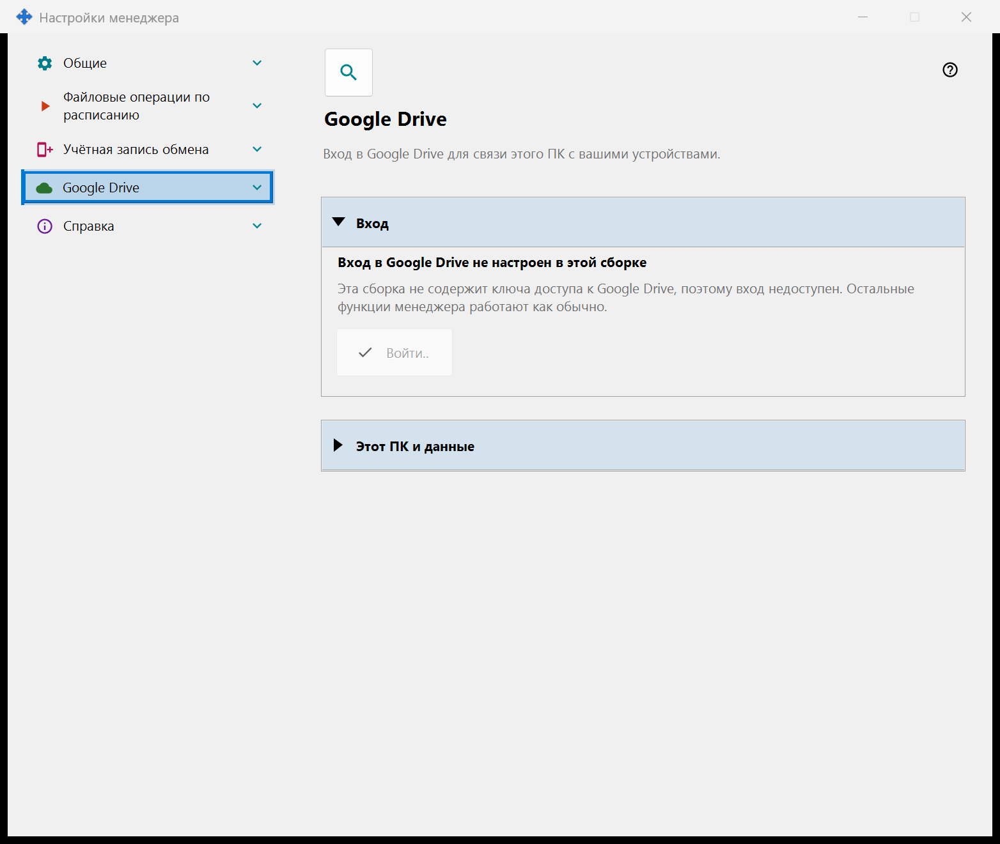
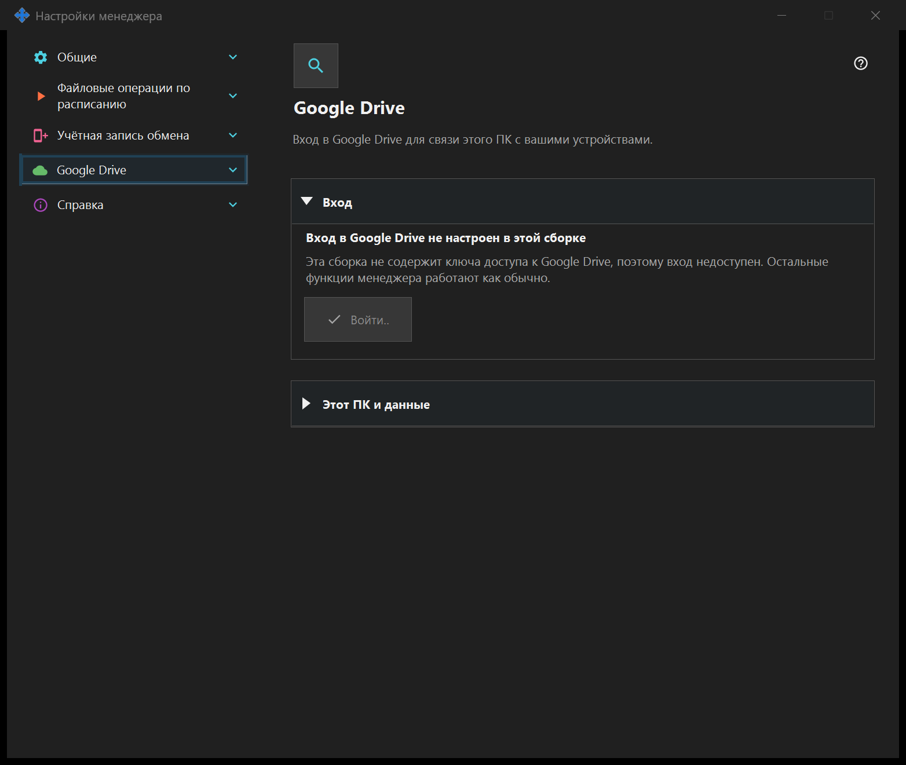

Настройки менеджера
Настройки менеджера
Назначение
Здесь настраиваются запуск менеджера, тема и язык. Подключение этого ПК к удалённому серверу обмена, публикация ресурсов, буфер и операции по расписанию принадлежат менеджеру и не требуют установки локального сервера обмена или включения SFTP. Если установлен компонент общего доступа SFTP, его страницы входят в это окно отдельной группой.


Порядок действий
Откройте настройки менеджера из его окна или трея. Выберите страницу, раскройте группу или воспользуйтесь поиском. Ссылка открывает настройки локального сервера обмена рядом с этим окном. Закрытие одного окна сохраняет другое окно, расписания и работающие серверы.
Элементы окна
Настройки менеджера
Здесь настраиваются запуск менеджера, тема и язык. Подключение этого ПК к удалённому серверу обмена, публикация ресурсов, буфер и операции по расписанию принадлежат менеджеру и не требуют установки локального сервера обмена или включения SFTP. Если установлен компонент общего доступа SFTP, его страницы входят в это окно отдельной группой. Откройте настройки менеджера из его окна или трея. Выберите страницу, раскройте группу или воспользуйтесь поиском. Ссылка открывает настройки локального сервера обмена рядом с этим окном. Закрытие одного окна сохраняет другое окно, расписания и работающие серверы.
Настройки менеджера
Здесь настраиваются запуск менеджера, тема и язык. Подключение этого ПК к удалённому серверу обмена, публикация ресурсов, буфер и операции по расписанию принадлежат менеджеру и не требуют установки локального сервера обмена или включения SFTP. Если установлен компонент общего доступа SFTP, его страницы входят в это окно отдельной группой. Откройте настройки менеджера из его окна или трея. Выберите страницу, раскройте группу или воспользуйтесь поиском. Ссылка открывает настройки локального сервера обмена рядом с этим окном. Закрытие одного окна сохраняет другое окно, расписания и работающие серверы.
Google Drive
Здесь этот ПК входит в ваш собственный аккаунт Google, чтобы приложение могло пользоваться своей скрытой папкой на вашем Google Drive. Нажмите «Войти..»: откроется браузер по умолчанию, вы подтверждаете доступ в Google, и Google возвращает ответ на этот ПК по локальному адресу; после этого вкладку браузера можно закрыть. Запрашивается единственное разрешение - доступ к собственной скрытой папке приложения на вашем Google Drive (область drive.appdata): приложение не видит других файлов на вашем Google Drive и не получает ни адрес электронной почты, ни данные профиля. Если Google предоставляет не тот доступ, который запрошен, вход отклоняется. Жирная строка показывает состояние. «Вход в Google Drive не выполнен»: доступна кнопка «Войти..»; если доступ отозван или истёк, строка ниже сообщает об этом и предлагает войти снова. «Ожидание входа в браузере..»: завершите вход в браузере или нажмите «Отмена». «Вход в Google Drive выполнен»: этот ПК связан с вашим Google Drive, показаны его имя и краткий идентификатор. «Google Drive сейчас недоступен»: строка ниже называет причину - нет связи, достигнут суточный лимит загрузки, на вашем Google Drive нет свободного места или Google вернул ошибку; при отсутствии связи и при ошибке приложение повторяет попытку само. «Выход из Google Drive..» показывается, пока идёт выход. «Выйти на этом устройстве» задаёт один вопрос, ответ по умолчанию - «Нет». После «Да» доступ отзывается в Google, записи этого ПК удаляются из скрытой папки на вашем Google Drive, а токен входа, сохранённый на этом ПК, удаляется; строка под кнопками сообщает, сколько записей удалено, или что Google не подтвердил отзыв доступа - его тогда можно отозвать в настройках аккаунта Google. В сборке без ключа доступа Google страница показывает «Вход в Google Drive не настроен в этой сборке», кнопка «Войти..» недоступна, остальные функции менеджера работают как обычно.


Настройки менеджера
Здесь настраиваются запуск менеджера, тема и язык. Подключение этого ПК к удалённому серверу обмена, публикация ресурсов, буфер и операции по расписанию принадлежат менеджеру и не требуют установки локального сервера обмена или включения SFTP. Если установлен компонент общего доступа SFTP, его страницы входят в это окно отдельной группой. Откройте настройки менеджера из его окна или трея. Выберите страницу, раскройте группу или воспользуйтесь поиском. Ссылка открывает настройки локального сервера обмена рядом с этим окном. Закрытие одного окна сохраняет другое окно, расписания и работающие серверы.
Настройки менеджера
Здесь настраиваются запуск менеджера, тема и язык. Подключение этого ПК к удалённому серверу обмена, публикация ресурсов, буфер и операции по расписанию принадлежат менеджеру и не требуют установки локального сервера обмена или включения SFTP. Если установлен компонент общего доступа SFTP, его страницы входят в это окно отдельной группой. Откройте настройки менеджера из его окна или трея. Выберите страницу, раскройте группу или воспользуйтесь поиском. Ссылка открывает настройки локального сервера обмена рядом с этим окном. Закрытие одного окна сохраняет другое окно, расписания и работающие серверы.
Настройки менеджера · Настройки общего доступа SFTP · Настройки сервера обмена